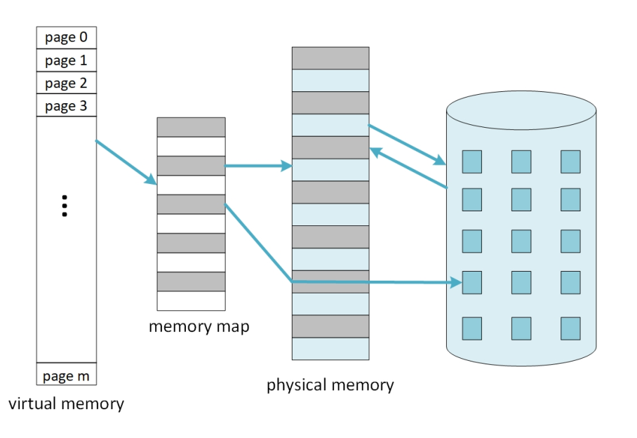
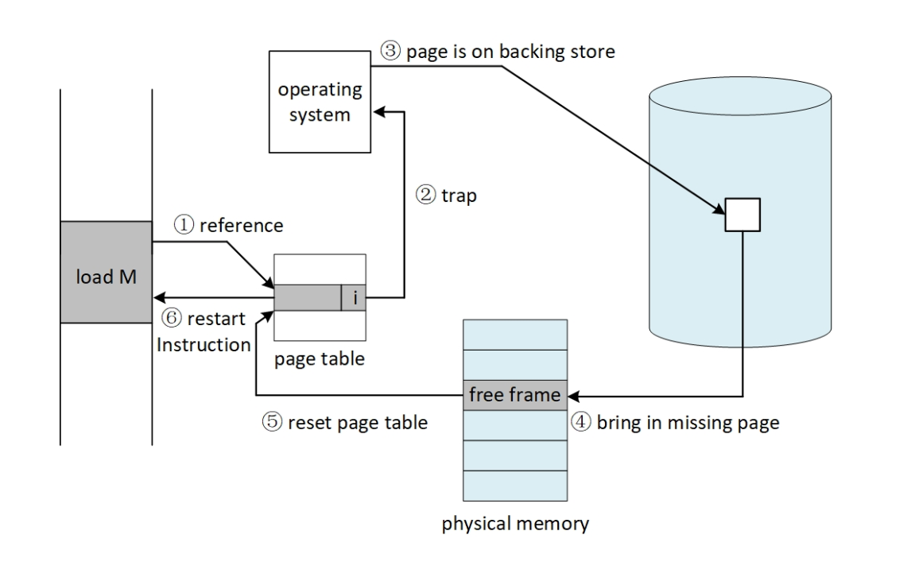
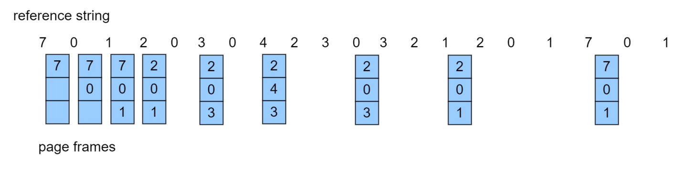
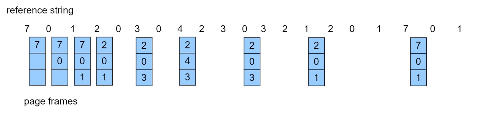
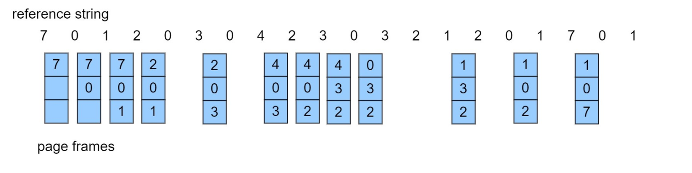
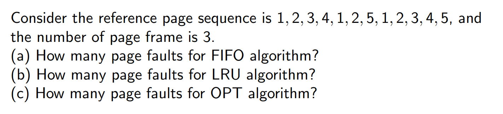
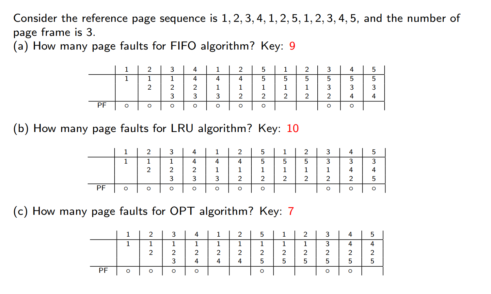
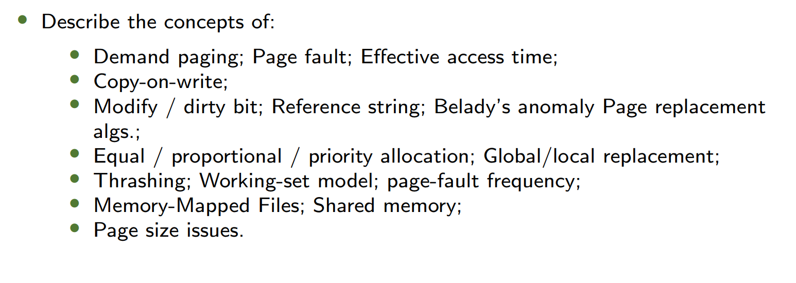

1. Warm-up (预热)
What Happens When OS is Booting? (操作系统启动时发生了什么？)
- OS @boot (kernel mode):
- Initialize trap table (初始化陷阱表)
- Start interrupt timer (启动中断计时器)
- Initialize process table (初始化进程表)
- Initialize free list (初始化空闲列表)
- Hardware:
- Remember addresses of handlers (记录处理程序的地址):
- System call handler (系统调用处理程序)
- Timer handler (计时器处理程序)
- Illegal memory-access handler (非法内存访问处理程序)
- Illegal instruction handler (非法指令处理程序)
- Start timer; interrupt after X ms (启动计时器，X毫秒后中断)
What Happens When OS is Running? (操作系统运行时发生了什么？)
- Remember addresses of handlers (记录处理程序的地址):
- OS @run (kernel mode):
- Allocate entry in process table (在进程表中分配条目)
- Allocate memory for program (为程序分配内存)
- Set base/limit registers (设置基址/界限寄存器)
- Return-from-trap (into Process A) (从陷阱返回到进程A)
- Hardware:
- Restore registers of A (恢复进程A的寄存器)
- Move to user mode (切换到用户模式)
- Jump to A’s initial PC (跳转到进程A的程序计数器)
- Program (user mode):
- Fetch/execute instructions (取指/执行指令)
- Translate virtual addresses (虚拟地址转换)
What Happens During an Exception? (异常发生时发生了什么？)
- Timer interrupt → OS handles trap:
- Save/restore process registers (保存/恢复寄存器)
- Terminate process if needed (必要时终止进程)
- Invalid memory access → Segmentation fault (非法内存访问 → 段错误)
- Page fault → Load missing page (缺页 → 加载缺失页)
2. Background (背景)
- Virtual memory: an additional level in the memory hierarchy, separation of user logical memory from physical memory
- Benefits:
- 程序执行时只需部分驻留在内存中
- 因此，逻辑地址空间可以远大于物理地址空间
- 允许地址空间被多个进程共享
- 支持更高效的进程创建
- 可同时运行更多程序
- 加载或交换进程所需的I/O操作更少
Key Concepts (关键概念):
- Backing Store (后备存储): Reserved disk space for swapping (用于交换的磁盘空间).
- Demand Paging (按需分页): Pages loaded only when accessed (页仅在访问时加载).

3. Swapping Mechanisms (交换机制)
Swap Space (交换空间):
- the reserved space on the backing store for moving pages back and forth.
- OS can read from and write to the swap space, in page-sized units.
- OS needs to remember the disk address of a given page.
Page Fault Handling (缺页处理):
If there is a reference to a page, first reference to that page will trap to operating system.
- Operating system looks at an internal table to decide:
- Valid bit = 0 -> abort (segmentation fault)
- Present bit = 0 -> just not in memory (page fault).
- Handler:
- Find free frame (找到空闲帧).
- Swap page into frame via scheduled disk operation(调入页).
- Reset tables to indicate page now in physical memory (i.e., set Present bit = 1)
- Restart instruction (重启指令).

Hardware Algorithm (硬件算法):
if TLB_hit and access_allowed:
Access memory
else if page_not_present:
Raise PAGE_FAULT
Software Algorithm (软件算法):
PFN = FindFreePage()
if no_free_page:
EvictPage()
DiskRead(PTE.DiskAddr, PFN)
UpdatePageTable()
RetryInstruction()
4. Swapping Policies: Page Replacement (交换机制：页替换策略)
- 通过修改页面错误服务例程以包含页面置换功能，防止内存过度分配
- 使用修改（脏）位来减少页面传输开销：仅将已修改的页面写入磁盘
- 页面置换实现了逻辑内存与物理内存的完全分离：可在较小的物理内存上提供大容量虚拟内存
Basic Page Replacement
- 在磁盘上找到目标页面的位置
- 查找一个空闲帧：
- 若存在空闲帧，使用该帧
- 若无空闲帧，使用页面置换算法选择一个被替换帧
- 若被替换帧为脏页（已修改），将其写入磁盘
- 将目标页面载入（新释放的）空闲帧；更新页表和帧表
- 重新启动导致陷阱的指令以继续进程
- 注意：如果没有空闲帧，此时页面错误可能涉及 2 次页面传输（调出、调入）: 增加有效访问时间（EAT）
Reference String 引用串 - 页面编号，不是完整地址
- Repeated access to the same page does not cause a page fault
Algorithms (算法):
以Reference String = [7, 0, 1, 2, 0, 3, 0, 4, 2, 3, 0, 3, 0, 3, 2, 1, 2, 0, 1, 7, 0, 1] ，内存中 3 frames为例：
- Optimal (OPT): Replace page unused longest (替换最长时间不会使用的页).
- 
- 9 page faults
- 无法知道未来，不可实现
- FIFO: Replace oldest page (替换最早进入的页).
- 
- 15 page faults
- Suffers from Bélády’s Anomaly
- Adding more frames can cause more page faults
- LRU: Replace least recently used page (替换最长**时间（不是次数）**没有使用的页).
- 
- 12 page faults
- 实现：
- Counter implementation 计数器实现
- 每个页表项都有一个计数器；每当通过该表项引用页面时，将时钟值复制到计数器中
- 当需要更换页面时，查看计数器以找到最小值
- 需要遍历页表进行搜索
- Stack implementation
- 以双向链表形式维护一个页号栈
- 当页面被引用时：
- 将其移至栈顶
- 需要修改6个指针（为什么？）：
- 假设双向链表中每个节点包含前驱（
prev）和后继（next）指针，移动节点时需操作以下指针： 1. 节点原前驱的next指针 2. 节点原后继的prev指针 3. 栈顶节点的prev指针 4. 节点新前驱（原栈顶）的next指针 5. 节点自身的prev指针（指向原栈顶） 6. 节点自身的next指针（置为null，因成为新栈顶）
- 每次更新代价更高：
- 需频繁操作双向指针，时间复杂度为 (O(1))，但常数因子较大。
- 无需搜索置换页面（为什么？）：
- LRU页面始终位于链表底部（尾节点），置换时直接删除尾节点即可，无需遍历链表查找。
- Counter implementation 计数器实现
- LRU和OPT算法没有Belady异常
- 近似LRU算法/LRU Approximation Algorithms
- Reference bit
- With each page associate a bit, initially = 0
- When page is referenced, bit set to 1
- Replace any with reference bit = 0 (if one exists)
- Additional-Reference-Bits Algorithm 额外引用位算法
- 为每个页面保留一个8位字节
- 定期将各位右移1位，将引用位（Reference Bit）移入最高位，舍弃最低位
- 此时被引用的高位为1，较大；没被引用的高位为0，较小
- 将这些8位字节解释为无符号整数，数值最小的页面即为LRU页面
- Second-chance algorithm 第二次机会算法
- Generally FIFO, plus hardware-provided reference bit
- 若要置换的页面满足：
- 引用位 = 0 → 直接置换该页面
- 引用位 = 1 →
- 将引用位设置为0，保留页面在内存中
- 按相同规则置换下一个页面
- Enhanced Second-Chance Algorithm
- Improve algorithm by using reference bit and modify bit (if available) in concert
- 采用有序对（引用位，修改位）分类页面：
- (0, 0)：近期未使用且未修改： 最适合置换的页面
- (0, 1)：近期未使用但已修改： 置换优先级次之，置换前必须先写回磁盘
- 问题：页面如何在未被使用的情况下被修改？
- 解释：可能通过后台进程或DMA（直接内存访问）操作修改（如内存映射I/O），无需CPU访问页面即被修改。
- (1, 0)：近期使用过但未修改： 很可能很快会被再次使用
- (1, 1)：近期使用过且已修改： 很可能很快会被再次使用，且置换前需先写回磁盘
- Reference bit
- 基于计数的页面替换
- 为每个页面维护一个引用次数计数器
- （该方法）并不常见
- 最不常用算法（Least Frequently Used, LFU）：置换计数器值最小的页面
- 最常用算法（Most Frequently Used, MFU）：基于以下论点 —— 计数器值最小的页面可能刚被调入内存，尚未被使用
- 页面缓冲算法
- 始终维护一个空闲帧池
- 这样在需要时可直接获取空闲帧，而无需在缺页时临时查找
- 将页面读入空闲帧，选择待淘汰的页面并将其加入空闲池
- 在方便时淘汰目标页面
- 可能需要维护一个已修改页面列表
- 当后备存储处于空闲状态时，将这些页面写入并标记为非脏页
- 可能需要保留空闲帧的内容并记录其存储的页面
- 若在重新使用前再次引用该页面，则无需从磁盘重新加载内容
- 总体而言，这有助于减少因错误选择淘汰帧而导致的性能损耗
- 始终维护一个空闲帧池
- 应用程序与页面置换
- 所有这些算法都需要操作系统对未来的页面访问进行猜测
- 某些应用程序（如数据库）对自身的页面访问模式有更清晰的认知
- 内存密集型应用可能导致双重缓冲问题
- 操作系统将页面副本保留在内存中作为I/O缓冲区
- 应用程序为自身工作也会将页面保留在内存中
- 操作系统可以让应用程序直接访问磁盘，避免中间干扰
- 原始磁盘模式
- 绕过缓冲、锁定等操作
In class Exercise

Answer:

5. Allocation of Frames (帧分配)
Fixed Allocation (固定分配):
- Equal Allocation (均等分配):
- Each process gets equal frames (e.g., 100 frames ÷ 5 processes = 20 frames each).
- 每个进程获得相同数量的帧（例如：100帧 ÷ 5进程 = 每进程20帧）.
- Proportional Allocation (比例分配):
- Allocate based on process size (按进程大小分配).
- Formula:
- : Size of process .
- : Total frames available.
Priority Allocation (优先级分配):
- Higher-priority processes get more frames (高优先级进程获得更多帧).
- Page replacement can steal frames from lower-priority processes (可从低优先级进程抢占帧).
Global vs. Local Replacement (全局 vs. 本地替换):
- Global: Replacement from all frames (higher throughput).
- 从所有帧中选择替换（吞吐量更高）.
- Local: Replacement only from process’s own frames (consistent performance).
- 仅从进程自身帧中选择替换（性能稳定）.
NUMA (Non-Uniform Memory Access):
- Memory access speed varies by CPU proximity (内存访问速度因CPU距离而异).
- OS optimizes by allocating "close" memory (e.g., Solaris uses lgroups).
6. Thrashing (抖动)
Definition:
- Excessive page faults → Low CPU utilization (频繁缺页 → CPU利用率低).
- OS responds by adding more processes, worsening thrashing (恶性循环).
Locality Model (局部性模型):
- Processes alternate between locality sets (pages actively used).
- 进程在多个局部性集合间切换（活跃使用的页）.
- Thrashing occurs if .
Working-Set Model (工作集模型):
- Working-Set Window (): Tracks pages referenced in last accesses.
- 工作集窗口：记录最近 次页面引用
- 如果一个页面处于活动使用状态，那么它处在工作集中；如果它不再使用，那么他在最后一次引用的 时间单位后，会从工作集中删除
- Working-Set Size (): Pages in current locality (当前局部性的页数).
- If total demand , suspend a processes (若总需求 > 内存，挂起一个进程).
Page-Fault Frequency (PFF):
- Directly control fault rate by adjusting frames (动态调整帧数以控制缺页率).
- Too high → Allocate more frames.
- Too low → Reclaim frames.
7. Other Concepts (其他概念)
Copy-on-Write (COW, 写时复制):
- Mechanism: Share pages until modification triggers copy (共享页直到修改时复制).
- Used in
fork(): Child shares parent’s pages initially. - 用于
fork()：子进程初始共享父进程页.
- Used in
vfork(): Parent pauses until child callsexec()(父进程暂停，直到子进程调用exec()).
Memory-Mapped Files (内存映射文件):
- Map file to memory region via
mmap()(通过mmap()将文件映射到内存). - Access file via pointers (e.g.,
*p) instead ofread()/write().- 通过指针（如
*p）访问文件，替代read()/write().
- 通过指针（如
Kernel Memory Allocation (内核内存分配):
- Buddy Allocator: Splits memory into power-of-2 chunks (按2的幂分配).
- Example: 256KB → 128KB + 128KB → ... → 32KB for request.
- 示例：256KB → 128KB + 128KB → ... → 满足32KB请求.
- Slab Allocator: Pre-allocates objects for kernel structures (e.g., inodes).
- 预分配内核对象（如inode），避免碎片.
8. Linux-Specific Optimizations (Linux优化)
Page Cache (页缓存):
- Caches file data, metadata, and heap/stack pages (缓存文件数据、元数据、堆栈页).
- Uses 2Q algorithm for replacement (近似LRU):
- Inactive List: First-time accessed pages (首次访问的页).
- Active List: Promoted on re-access (再次访问时升级).
Security (安全机制):
- NX Bit: Marks stack as non-executable (防止栈溢出攻击).
- ASLR: Randomizes memory layout to thwart ROP attacks (地址空间布局随机化).
- KPTI: Isolates kernel pages to mitigate Meltdown/Spectre (内核页表隔离).
9. Performance Optimization & Case Studies
Demand Paging Optimization (按需分页优化)
-
Swap Space vs. File I/O:
- Swap I/O is faster than file system I/O (even on same device).
- 交换空间I/O比文件系统I/O更快（即使在同一设备上）.
- Reason: Swap uses larger contiguous blocks (交换空间使用更大的连续块).
-
Prepaging (预分页):
- Load predicted pages before they are referenced (提前加载可能需要的页).
- Risk: Wasted I/O if predictions are wrong (预测错误会导致浪费).
-
Mobile Systems:
- No swap space; reclaim read-only pages directly (无交换空间，直接回收只读页).
Inverted Page Tables (反向页表)
- Challenge:
- Requires external page tables to locate non-resident pages (需外部页表定位未驻留页).
- May trigger additional page faults during lookup (查找时可能引发额外缺页).
10. Program Structure & Performance
(程序结构与性能影响)
Example: Row-Major vs. Column-Major Access
int data[128][128]; // Each row stored in one page (每行占一页)
// Program 1: Column-wise access → 16,384 page faults
for (int j = 0; j < 128; j++)
for (int i = 0; i < 128; i++)
data[i][j] = 0;
// Program 2: Row-wise access → 128 page faults
for (int i = 0; i < 128; i++)
for (int j = 0; j < 128; j++)
data[i][j] = 0;
- Key Insight: Access patterns affect page fault rates (访问模式影响缺页率).
I/O Interlock (I/O 锁)
- Pages involved in I/O must be locked in memory (禁止被替换).
- Prevents corruption during device transfers (防止数据传输期间的错误).
11. After-Class Exercises (课后练习)

12. Summary (总结)
| Concept | Key Point |
|---|---|
| Virtual Memory | Decouples logical vs. physical memory (逻辑内存 ≠ 物理内存) |
| Page Replacement | LRU ≈ Optimal but hard to implement (LRU接近OPT但难实现) |
| Thrashing Prevention | Working-Set Model or PFF (工作集模型或缺页频率控制) |
| Linux Implementations | 2Q algorithm + KPTI (2Q算法 + 内核页表隔离) |